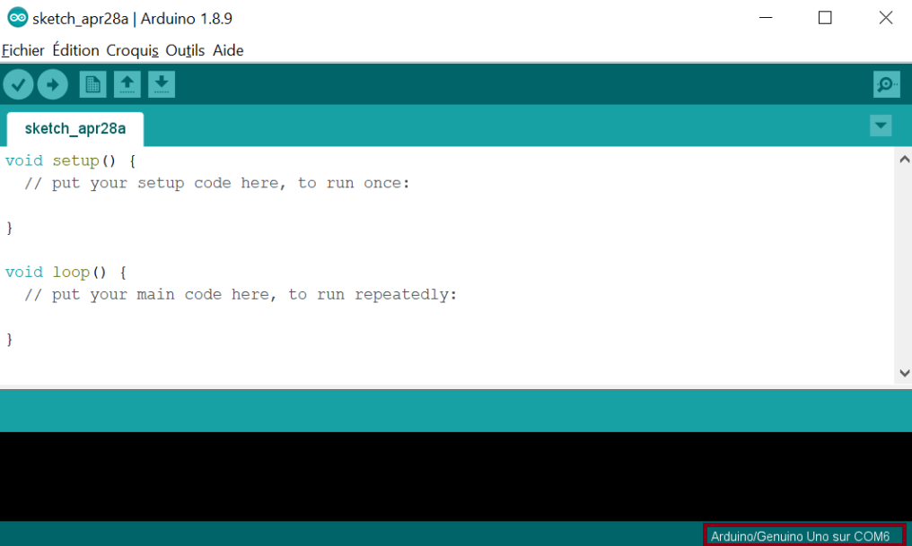
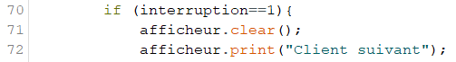
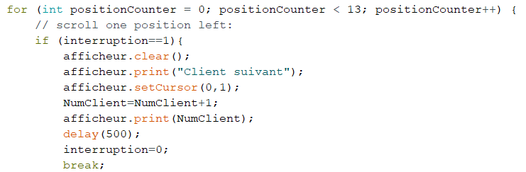

Tous les cours seront en pdf sur cette page
Arduino est la marque d'une plateforme de prototypage open-source qui permet aux utilisateurs de créer des objets électroniques interactifs à partir de cartes électroniques matériellement libres sur lesquelles se trouve un microcontrôleur. Les schémas de ces cartes électroniques sont publiés en licence libre.
Ci-dessus nous avons l'interface Arduino, l'encadré rouge nous indique le nom de la carte utilisé
et le port sur lequel elle est branchée.
Void setup est l'endroit où nous allons placer le code qui sera exécuté une seul fois.
Void loop est l'endroit où le code sera exécuté en boucle.
Ci-dessus nous avons l'interface Arduino, l'encadré rouge nous indique comment ajouter une librairie sur arduino.
Sur les cartes éléctroniques Arduino, nous avons des entrées et des sorties : - Les entrées sont utilisé pour pouvoir lire l'état initial d'un bouton ou autre, - Les sorties sont utilisé pour exécuter le programme sur une LED par exemple.
Les grandeur analogique possède 1024 valeurs (0 à 1023), alors qu'une grandeur numérique dispose 2 valeurs (0 -> pas de signal et 1 -> un signal).
La conversion analogique/numérique permet de communiquer du système analogique vers le système numérique.
La structure conditionelle est représenté par la déclaration if dans laquelle se trouvera une confition comme par exemple :

Dans la déclaration de if, nous allons retrouver else qui sera utilisé si la condition de if n'est pas rempli.
Dans la structure itérative, nous allons retrouver la boucle for qui est utilisé pour les actions répétitives.
Par exemple, sur l'image ci-dessus, dans cette structure itérative, nous pouvons voir une structure conditionelle, nous pouvons donc utiliser les deux dans le même cas.
Pour utilser une bibliothèque, nous devons tout d’abord nous assurer que nous disposons bien de la bibliothèque en question, sinon il faudra la télécharger, une fois fait, pour la retrouver il suffit de faire : Croquis>Inclure une bibliothèque>...
Le moniteur série nous permet de faire la communication entre la carte arduino et notre pc. Avant d’utiliser le moniteur série, il nous faut l’initialiser avec : Serial.begin (9600) 9600 est la valeur par défaut et correspond à la vitesse de transmission entre la carte et le PC. Nous pouvons voir dans ce moniteur série l’exécution du programmes si jamais nous avons utilisé par exemple :
Serial.print(Température:);
Serial.print(Tempvalue);
Dans le moniteur série nous aurons par exemple si il fait 25 °C : Température : 25 En sortie, le moniteur série affiche les valeurs reçu par la carte et en entrée, elle affiche les transmissions reçu de l’ordinateur.
La modulation de largeur d’impulsions (PWM) sert à lire la valeur analogique en utilisant dans le programme analogWrite( )
Une interruption est utilisée pour interrompre le programme sur une durée pour exécuté un autre programme, quand celui-ci est terminé, le 1er programme reprend son exécution là où il c’était arrêté avant l’interruption.